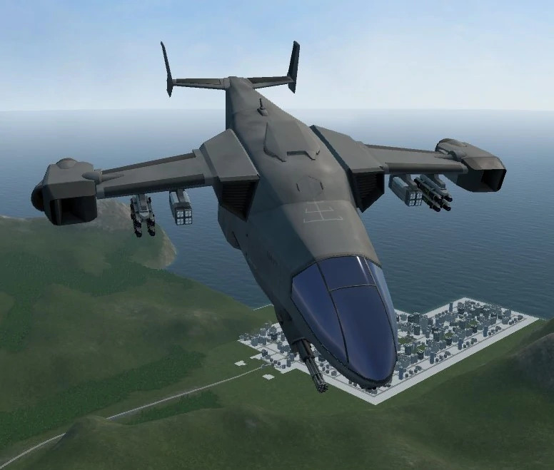

VTOL VR REVEIW
what is vtol vr
.jpg)
vtol vr is a vr mil flight sim. it is imursive amd fun espaccially with freinds and is only devloped by one person
gameplay
vtol vr has amazing game play and shows how using vr can make a otherwise stale enviroment immursive,
vtol vr also is easy to learn but hard to master
my only complaint with the game play is that the turtoials could be better
. multiplayer is also amazing its fun to fly and do missions with your freinds espaccially
in the tandem aircraft
graphics
vtol vr has normal vr graphics not too good but it works for vr the gameplay is where its it
sound
vtol has 3 tracks in the built in mp3 player in the plane the tracks sound preetty good and go well with gameplay,
other than that there is no soundtrack
story
most aircraft except 2 have a plot in there campaighn the story is not rich but it does make it feel like all the missions are connected
overall
10/10
in conclusion vtol vr is a amazing vr game is you are getting a headset for pcvr get vtol vr and a freind its the most fun you will ever have in your life
vehicle reveiws
vtol vr does not have many vehicles unlike simmuler games such as dcs world.
however what vtol vr lakes in quanity it gains is simple enjoyment so starting in order of realase date
here are you aircraft.
AV-42C
overveiw
the AV-42C or (Attack Verticle 42C) nicknamed the kestral is the first aircraft in the game and is one of the 3 vtol aircrafts out of the 5 in game

review
the av-42c is easy to fly and its "island" campaign is great for new players to start in
it is used in its own campaighn as well as the campaign of other vehicles as a crew transporter
it is also a great attack aircraft due to its optionoal gimble gun and quick vtol transiation
it vtol engines are the only engines in the game capable of full afterburner while in flight allowing the av-42 to have some thrust vectoring
the only downside of the av-42 is its lack of radar makes it no an ideal fighter.
real life inspireation
all aircraft in vtol vr are fictonial but take heavy inspireation from us millatairy aircraft
the av-42c is byfar the most ficional aircraft in the game but canned be summed up by saying...
the av-42c is the v-22 opsreay if it was a jumpjet and had more weapons systems
FA-26B
overveiw
the FA-26B or (Fighter Attack 42B) nicknamed the wasp might as well be the ANGEL OF DEATH
the plane is huge as shown in the image below futureing the wasp being compared to the a320 the plane is not a vtol but did intradouce radar in the game


reveiw
the fa26 is a angel of death its huge powerful twin engines
and 14 hardpoints allow it to carry mulyiple hydras a gun cluster bombs and agm65,s with extra fuel while still keeping a twr above 1
the wasps campaighn desert cobra is a excellent campaign starting from where the island left you off and quicly leading up to huge epic missions
includeing the final mission witcSh is arguably the hardest mission in the game
where you take off from the carrier loaded with weapons fly over a peir while taking out sams do a small canyon run
to come over a city take out more sams then do another canyon run then proceeding to pop out at the biggest millatairy base in the game
as hinted by the name the fa26b is a fighter attack aircraft the aircraft was the first to include radar making it a excent fighter and the high carring capacity
also makes it the perfect combo aircraft being able to carry aim missle,s and agm,s in good quanity
real life inspireation
as shown in the img below the fa26b is based off the f22,f18, and f15 the cockpit comes from the f22
while the mid section comes from the f15 and the engines come from the f18

F-45
overveiw
the f-45 or (fighter 45) nicknamed the ghost is the second to smallest aircraft in the game but is certainlty the most advanced
the plane added stelth mechanics into the game the plane is also the 2nd out of the 3 vtol aircraft in the game


reveiw
the f-45 is the hardest jet to fly in the game but had a high reward the ghosts stelth capabillitys make it a excellent fighter
for it is able to infratrate farther into enemy terratory without being scene
the aircraft also has a advanced hud display as shown below
the hud uses the RWR(radar warning reciver) to track other aircraft,missles,groundtargets,etc the hud is also head mounted meaning no matter witch direction you look you will always see this infomation
the aircraft only has one mfcd and is in a tablet format as shown below
the tablet format allows the pilot to show almost evry screen they would need at sized that makes sence in other aircraft you would have to constanly switch between nav tpg radar etc
the 45 allows you to have you css,rwr,radar,tatical situation display,comms,etc all on the same screen